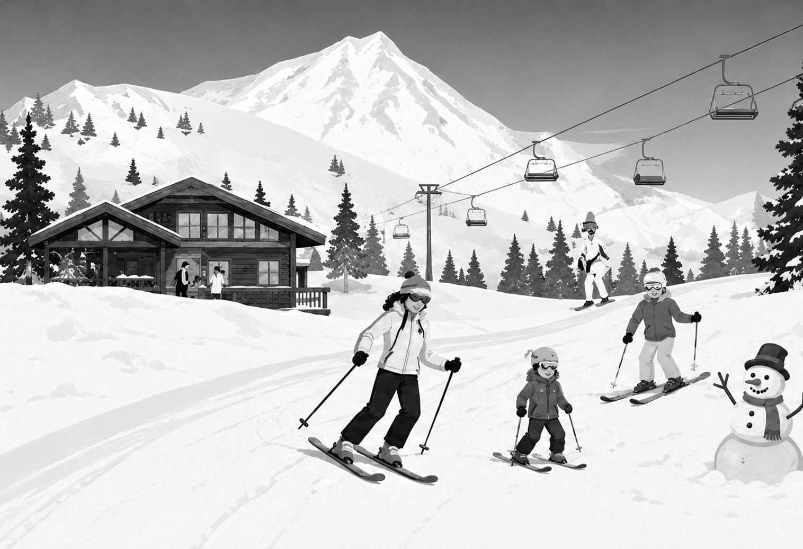

Speaking Section
Read the instructions below. They explain how the Speaking section works and what you are expected to do.
- You will see a picture and hear a prompt.
- Preparation time depends on the task (15 or 20 seconds).
- A countdown timer will show how long you have to speak.
- Your response will be recorded automatically.
- Speak clearly and at a natural pace.
Click Next to check your microphone.
Microphone Check
Before you begin, we need to check that your microphone is working. Click the button below to allow access and test your microphone.
Task 1 — Describe the Picture

Describe the photo. Talk about what you see, the people, the setting, and what might be happening. You have 15 seconds to prepare and 60 seconds to speak.
Task 2 — Question
Talk about a time when you had to make a difficult decision. What was the situation? What did you decide? How did it turn out? You have 15 seconds to prepare and 60 seconds to speak.
Task 3 — Question
Some people believe that university education should be free for all students. Others think students should pay tuition fees. Which view do you support? Explain why. You have 15 seconds to prepare and 60 seconds to speak.
Task 4 — Question
Our city is planning to ban private cars from the city center to reduce pollution and traffic. What are the advantages and disadvantages of this plan? You have 20 seconds to prepare and 90 seconds to speak.
Task 5 — Question
Your school is considering replacing traditional textbooks with tablets and digital materials entirely. I am the school principal. Convince me that this is or is not a good idea for our students. You have 20 seconds to prepare and 90 seconds to speak.
This is the end of the Speaking section.
Your responses have been recorded. You have now completed the MET Mock Test.